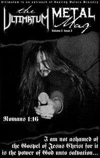

Browse by MagazineFor instance...CCM, HM, Charisma, Christianity Today |
Browse by ProfileFor instance...The Newsboys, Bloodgood, The Blind Boys of Alabama, Ricky Skaggs, Israel Houghton, Paul Johnson, P.O.D., Dino Kartsonakis, Moby, Over the Rhine, Grits, Jeremy Camp, Bob Dylan |
Periodically Published | Still informing the periodical reader. |
 | Down The Line covers: |  | Relevant covers: |
'Zines for Old Times | No 'mags' to see here. |
| The Ultimatum Metal Mag  | Enthroned | ACM Journal |
From Another Place | Unless you live there... |
Metalbreed From Argentina, in Spanish | Noizegate From Sweden, in Swedish |
2019 Top Artists: Dove and Grammy | 2019 Nominations and winners: Doves, Grammys. |
Dove: Song Dove: Songwriter Dove: Artist Grammy: Best Contemporary Christian Music Performance/Song Dove: Contemporary Christian Artist Grammy: Best Contemporary Christian Music Album Dove: Pop/Contemporary Album Dove: Pop/Contemporary Recorded Song | Dove: Artist Dove: Contemporary Christian Artist Dove: Worship Album Dove: Long Form Music Video | Dove: Song Dove: Pop/Contemporary Album Dove: Rock/Contemporary Recorded Song Dove: Short Form Music Video |
Dove: Song Dove: Pop/Contemporary Album Dove: Pop/Contemporary Recorded Song Dove: Long Form Music Video | Dove: Song Dove: Worship Album Dove: Worship Recorded Song Dove: Worship Song | Dove: Song Dove: Artist Dove: Contemporary Christian Artist Dove: Pop/Contemporary Album |
Dove: Song Dove: Artist Grammy: Best Contemporary Christian Music Performance/Song Dove: Pop/Contemporary Album Dove: Pop/Contemporary Recorded Song |


© 2011 CMnexus. Last updated September 2019. Contact: editor -AT- cmnexus -DØT- org About